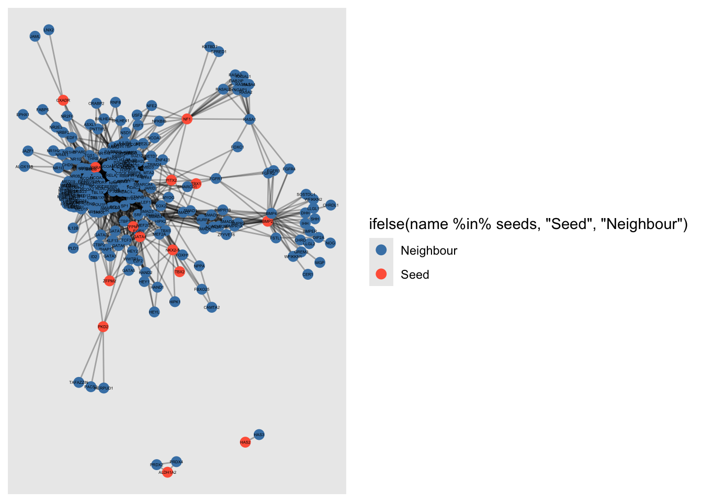
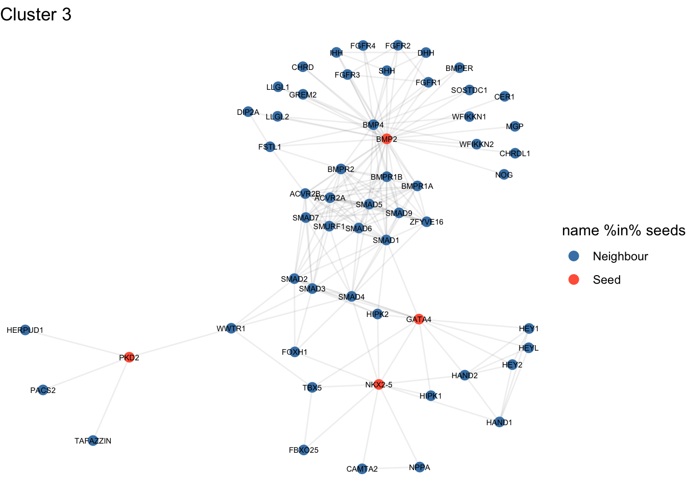

Overall objective: learn how to extract meaningful networks from human PPI data
Published
September 18, 2025
Heart Disease and Virtual Pulldown
Learning objectives:
Overall objective: learn how to extract meaningful networks from human PPI data
Virtual pulldowns: sampling 1st order networks and filtering “sticky proteins”
Finding tightly connected clusters in larger networks
Using R to extract, analyze, interpret and visualize (sub)networks.
In this exercise we’ll be working with two different approaches to network characterization:
Building a network “bottom-up” - sampling the 1st order interaction partners for a list of input proteins (“Virtual pulldowns”)
Topology based clustering on large input networks, followed by a search for cluster enriched in disease-related proteins
# Libraries neededlibrary(igraph)
Attaching package: 'igraph'
The following objects are masked from 'package:stats':
decompose, spectrum
The following object is masked from 'package:base':
union
library(msigdbr)library(fgsea)
Warning: package 'fgsea' was built under R version 4.5.1
library(ggraph)
Loading required package: ggplot2
# The PPI database we will use is InWeb, created at DTU. Note that it has a confidence score (cs-score) telling us how certain we about each interaction.:load(file='data/exercise4.Rdata')
“IGRAPH f97cc0a UN– 12396 204070” tells us the number of nodes and edges, where 12396 = number of nodes (proteins that remain after filtering) and 204070 = number of edges (interactions with cs ≥ 0.2).
The edge list below (TTC26 – KIF3C, etc.) shows some of the actual protein–protein connections. We can also see that inweb_cs is stored as an edge attribute, so we can still access the confidence scores later if needed
Now, we will do the virtual pulldown as a two-step process. First, we extract the subgraph (aka virtual pulldown), and then we filter it.
# Step 1: get neighbors (1st-order) of all seedsneighbors_list <-ego(g, order =1, nodes = seeds, mode ="all")# Flatten into a single vector of nodesneighbor_nodes <-unique(unlist(neighbors_list))# Extract subgraph (the virtual pulldown)sub_g <-induced_subgraph(g, vids = neighbor_nodes)sub_g
The command ego(g, order = 1, nodes = seeds, mode = “all”) extracts the first-order neighborhood for each of the seed proteins, i.e. the seeds themselves and all proteins directly connected to them by one interaction. Because we set mode = “all”, both incoming and outgoing edges are considered, though in this PPI network the edges are undirected. The function returns a list of ego-networks, one per seed.
We then use unlist() to flatten the list into a single vector of protein names, and unique() to remove duplicates, ensuring each protein only appears once.
Then, induced_subgraph(g, vids = neighbor_nodes) constructs a new graph object that contains only those proteins (the seeds and their neighbors) and all the edges among them. This subgraph is referred to as a “virtual pulldown,” because it computationally simulates the effect of experimentally pulling down a protein and identifying its binding partners.
Now we filter it by fraction-internal cutoff, this is what the filter_virtual_pulldown() function below does.
Fraction-internal cutoff represents what fraction of a node’s connections are inside the pulldown network vs. outside in the whole interactome we are analyzing, which if g (after filtering for confidence scores of >= 0.2).
# Step 2: Filter the virtual pulldown to remove "sticky" hub proteins# Function takes a subgraph, the full parent graph, and a cutoff threshold.filter_virtual_pulldown <-function(subGraph, parentGraph, cutoff) {# --- Check that both graphs have vertex names (proteins identified by name) ---if (is.null(V(subGraph)$name) ||is.null(V(parentGraph)$name))stop("Both graphs must have vertex 'name' attributes.")# --- Mode: "all" ensures degrees are calculated without direction --- mode <-"all"# --- Extract node names from the subgraph --- vn <-V(subGraph)$name# --- Degree in the full graph: total number of connections each node has globally --- deg_full <-degree(parentGraph, v = vn, mode = mode)# --- Degree in the subgraph: number of connections each node has inside the pulldown --- deg_internal <-degree(subGraph, mode = mode)# --- Combine results into a data frame for each node --- res <-data.frame(node = vn,deg_internal = deg_internal,deg_full = deg_full,# Fraction of a node’s total connections that lie within this pulldownfrac_internal =ifelse(deg_full >0, deg_internal / deg_full, NA_real_),stringsAsFactors =FALSE )# --- Keep only nodes that meet the cutoff for internal fraction --- nodes_to_keep <- res$node[!is.na(res$frac_internal) & res$frac_internal >= cutoff]# --- Build a new subgraph using only the kept nodes --- filteredSubGraph <-induced_subgraph(subGraph, vids =V(subGraph)[name %in% nodes_to_keep])# --- Add the fraction value as a vertex attribute (for later inspection) ---V(filteredSubGraph)$frac_internal <- res$frac_internal[match(V(filteredSubGraph)$name, res$node)]# --- Return the filtered network --- filteredSubGraph}
Now we will run “filter_virtual_pulldown()” with these cutoffs: 0, 0.2, 0.5, 1.
So cutoff = 0 keeps everything. cutoff = 0.2 keeps only proteins where more or equal to 20% of their total connections are inside the pulldown. cutoff = 1 keeps only the proteins whose entire interaction profile is inside the pulldown.
# Apply filter with different cutoffssub_0 <-filter_virtual_pulldown(sub_g, g, cutoff =0)sub_02 <-filter_virtual_pulldown(sub_g, g, cutoff =0.2)sub_05 <-filter_virtual_pulldown(sub_g, g, cutoff =0.5)sub_1 <-filter_virtual_pulldown(sub_g, g, cutoff =1)# Summarize number of nodes and edges for each cutoffsizes <-sapply(list(no_cutoff = sub_0, cutoff_0.2 = sub_02, cutoff_0.5 = sub_05, cutoff_1 = sub_1),function(x) c(nodes =vcount(x), edges =ecount(x)))sizes
The table here shows a clear and expected trend – the higher the cutoff, the fewer nodes and edges.
Now we plot the one with cutoff of 0.2:
# too large for Kamada-Kawaiggraph(sub_02, layout ="fr") +geom_edge_link(alpha =0.3) +geom_node_point(aes(size =degree(sub_02), color =ifelse(name %in% seeds, "Seed", "Neighbour")), size =3) +scale_color_manual(values =c("Seed"="tomato", "Neighbour"="steelblue")) +geom_node_text(aes(label = name), repel =FALSE, size =1) # label by 'name' (gene symbol)

Now we will look at the clusters using Louvain clustering (see Week 2) :
set.seed(22140) # reproducibilitycl <-cluster_louvain(sub_02, resolution =0.4)V(sub_02)$cluster <-membership(cl) # This takes the membership vector (a named integer vector where each element is a node, and the value is the community ID it belongs to) and assigns it as a vertex attribute named "cluster" to the sub_02. cluster_sizes <-sort(table(V(sub_02)$cluster), decreasing =TRUE)cluster_sizes[1:3] # see 3, we will only take the top 2-3 out of the 5 found
4 1 3
103 71 57
Let’s plot them!
# Split into separate subgraphs for each clustersub_c1 <-induced_subgraph(sub_02, V(sub_02)$cluster ==1)sub_c2 <-induced_subgraph(sub_02, V(sub_02)$cluster ==2)sub_c3 <-induced_subgraph(sub_02, V(sub_02)$cluster ==3)sub_c4 <-induced_subgraph(sub_02, V(sub_02)$cluster ==4)# Function to plot a single clusterplot_cluster <-function(graph, title) {ggraph(graph, layout ="kk") +geom_edge_link(alpha =0.1, colour ="grey40") +geom_node_point(size =3, aes(color = name %in% seeds)) +geom_node_text(aes(label = name), repel =FALSE, size =2, color ="black") +scale_color_manual(values =c("TRUE"="tomato", "FALSE"="steelblue"),labels =c("Neighbour", "Seed")) +ggtitle(title) +theme_void()}# Plot clusters separatelyplot_cluster(sub_c1, "Cluster 1")
plot_cluster(sub_c2, "Cluster 2")

plot_cluster(sub_c3, "Cluster 3")
plot_cluster(sub_c4, "Cluster 4 (largest)")
Alright, so now we will use the 2-3 largest clusters to do gene-set overrepressentation analysis (ORA) with fora() (first mentioned in Week 3).
Target = the genes in the cluster.
Universe (aka background) = all the genes that could have been chosen in this analysis.
Here, our universe is all the proteins in the filtered pulldown network (V(sub_02)$name).
Why not the full interactome (g) I hear you ask! Because we didn’t give fora() the chance to pick from those, since the clustering only operated on sub_02. Using g as background would inflate significance.
Warning: The `category` argument of `msigdbr()` is deprecated as of msigdbr 10.0.0.
ℹ Please use the `collection` argument instead.
Warning: The `subcategory` argument of `msigdbr()` is deprecated as of msigdbr 10.0.0.
ℹ Please use the `subcollection` argument instead.
BP_list <-split(BP_df$gene_symbol, BP_df$gs_name)# Now we need to clean the gene sets, just like in Week 3. clean_sets <-function(pathways, universe){ sets <-lapply(pathways, function(g) intersect(unique(g), universe)) sets[vapply(sets, length, integer(1)) >0]}BP_list <-clean_sets(BP_list, universe =V(sub_02)$name)# We know the largest clusters, so now we just take the gene names of the genes in each of those clusters. cl1_genes <-V(sub_02)$name[V(sub_02)$cluster ==1]cl3_genes <-V(sub_02)$name[V(sub_02)$cluster ==3]cl4_genes <-V(sub_02)$name[V(sub_02)$cluster ==4]# And run ORA with fora()! res_cl1 <-fora(BP_list, genes = cl1_genes, universe = universe)res_cl3 <-fora(BP_list, genes = cl3_genes, universe = universe)res_cl4 <-fora(BP_list, genes = cl4_genes, universe = universe)# Then we write a simple function to get the enrichmentadd_enrichment <-function(res, universe, target){ expected <- (res$size /length(universe)) *length(target) enrichment <- res$overlap / expected out <-cbind(res, expected, enrichment) out[order(res$padj, res$pval), ]}res_cl1 <-add_enrichment(res_cl1, universe, cl1_genes)res_cl3 <-add_enrichment(res_cl3, universe, cl3_genes)res_cl4 <-add_enrichment(res_cl4, universe, cl4_genes)head(res_cl1[, c("pathway","overlap","size","expected","enrichment","pval","padj")], 10)
OK, now i will have ChatGPT do the analysis of the tables – exactly what LLMs are good for.
Cluster 1
Top terms:
Transcription initiation (RNA polymerase II).
Fatty acid metabolic process regulation.
Cholesterol storage.
Interferon-gamma response.
AACM interpretation:
At first, lipid and cholesterol processes seem unrelated to embryonic AV canal formation. But notice that one of your seed genes, RXRA, is a nuclear receptor for retinoic acid. Retinoic acid signaling directly regulates endocardial cushion development. Lipid/cholesterol handling is part of how RXRA exerts its function.
The immune/inflammatory signal (IFN-γ response) is also not core developmental biology, but inflammation-related pathways do modulate extracellular matrix remodeling in cushions.
The transcription-initiation enrichment may reflect the presence of transcription factors like GATA4 and TBX genes, which are central to AACM.
Summary: Cluster 1 looks like a mixed regulatory/metabolic group: transcription factors + lipid metabolism, tying to RXRA’s role in AV cushion formation.
Cluster 3
Top terms:
Enzyme-linked receptor signaling.
BMP/TGF-β signaling.
Growth factor response.
Organ morphogenesis.
Ossification, SMAD protein signaling.
AACM interpretation:
This is your canonical developmental cluster. BMP2 and its downstream SMADs drive the epithelial-to-mesenchymal transition (EMT) that seeds mesenchymal cells in the endocardial cushions.
TBX2, NKX2-5, and GATA4 interact with BMP/TGF-β pathways to regulate atrioventricular septum development.
Organ morphogenesis and ossification terms reflect cushion maturation into valve structures.
Summary: Cluster 3 is the heart of AACM biology — direct evidence of the BMP/TGF-β/SMAD axis in endocardial cushion morphogenesis.
Cluster 4
Top terms:
Chromosome organization, chromatin remodeling.
Histone modification.
Epigenetic regulation of gene expression.
AACM interpretation:
This cluster represents the epigenetic control layer. The TBX, NKX, and GATA transcription factors that pattern the AV canal are tightly controlled by chromatin state.
Mutations in chromatin modifiers (like KMT2D — one of your cluster genes) are known to cause congenital heart defects.
Thus, while not heart-specific, these processes are mechanistically critical for allowing developmental genes to be expressed at the right time/place during AV canal formation.
Summary: Cluster 4 is the epigenetic enabler of AACM gene regulation.
Cluster 4 → epigenetic control (chromatin organization, histone modification) — regulates transcription factor activity in cushion development.
Cluster 1 → transcription factors, lipid metabolism, RXRA-related retinoic acid signaling, plus immune modifiers— adds metabolic and regulatory nuance to AACM biology.
Together, these three clusters make biological sense in AACM: they show developmental signaling, epigenetic regulation, and metabolic/transcriptional modulation.
BUT! Which gene is most central in the largest cluster (as defined by betweenness centrality) though? And does that make sense in the context of AACM pathology? The largest cluster was 4, so we will take that.
# Betweenness in the largest community (cluster 4)sub_c4 <-induced_subgraph(sub_02, V(sub_02)$cluster ==4)bc_c4 <-betweenness(sub_c4, directed =FALSE, normalized =TRUE)# Top by betweennesstop_gene_c4 <-names(which.max(bc_c4))top_gene_c4
[1] "RXRA"
Ok, now let’s check out RXRA! RXRA encodes the retinoid X receptor alpha, a transcription factor that mediates retinoic acid signaling. Retinoic acid is known to be essential for atrioventricular canal development, particularly through regulation of endocardial cushion formation. So it does make sense!
Here’s a bit more from ChatGPT on RXRA in the context of the atrioventricular septal defect. And that’s all for today!
RXRA background
RXRA is a nuclear receptor that binds retinoic acid (a vitamin A derivative).
It acts as a transcription factor, forming heterodimers with RARs, PPARs, and others.
In development, retinoic acid signaling is essential for heart morphogenesis — especially atrial and ventricular septation.
RXRA in AACM
In the atrioventricular canal, retinoic acid signaling via RXRA helps regulate endocardial cushion formation.
Endocardial cushions are precursors to the atrioventricular septum and valves.
RXRA knockout mice show congenital heart defects, including atrioventricular septal defects, outflow tract malformations, and valve abnormalities.
So RXRA is not only relevant — it’s actually directly tied to the disease phenotype you’re studying.
Why RXRA as “most central” makes sense
Network-wise: RXRA interacts with many transcriptional regulators and chromatin-modifying partners. That makes it a bridge between metabolic signals (vitamin A/lipids) and gene expression control.
Biologically: This fits cluster 4’s “epigenetic regulation” theme — RXRA doesn’t remodel chromatin itself, but it recruits chromatin-modifying complexes to regulate transcription.
Disease-wise: Because RXRA integrates metabolic cues with gene regulation, its centrality in the network mirrors its central role in AV canal morphogenesis.